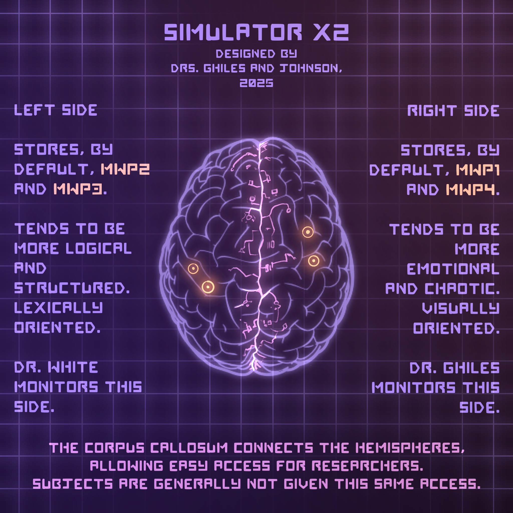

⠀With the research and development of hyper-intelligent quantum computers on B6, Project Lead M. White Ph.D. proposed an idea—one so ludicrous, it was shot down immediately. But she continued her studies, enlisting me (only nineteen at the time) as her associate.
⠀The principle was simple—take advantage of the MWI (Many-Worlds Interpretation), a theory proven back in 2032, the year I was born. It wasn’t too complicated, either; our computers were already able to download the human psyche. White suggested we use theory and technology in tandem.
⠀Thus, the Many-Worlds Project was born. Our tests started small—observe the divergence of parallels from our own, using our simulation program, Simulator X2. Through many experiments, we determined it would be feasible for our quantum computers to interact with entangled parallels, worlds similar to our own and superpositioned with more particles than usual.
⠀Using the theoretical model from the simulation, we created the device, apprehensively calling it the Transversal. Named after its mathematical counterpart, a line which crosses through parallel lines, we had high hopes it could give us information about the alternate realities these parallels contained.
⠀Entangled parallels, though, were hard to come by. We needed a basis to work with—some sort of framework to match worlds to one another. And since the most traceable signature through parallels is the human consciousness, we decided we would align our computers for a particular brain.
⠀But of course, to do this, we needed a volunteer. The technology was new and somewhat risky, but upon being given the opportunity to make history, [REDACTED] decided to help. We hooked them up to the computer and started scanning.
⠀Quickly, we found a match. An identical signature—a parallel version of [REDACTED]. For some reason, though, we couldn’t bring their consciousness through the parallel. So Dr. White upped the power, more and more, until tragically, the computer sent a shock through the cords and wound up killing our volunteer.
⠀Somehow, though, this provided us with the full and complete consciousness of their alternate self. We still don’t know why this is the case, but it appears two parallel humans cannot both be alive at the same time in the same world. Their death provided us with the jumping-off point we needed. Rest in peace, [REDACTED].
⠀Knowing a consciousness is a very fragile thing, we quickly contained them in X2. In hindsight, it may have been better to procedurally erase their memories beforehand—MWP01 was very hard to analyze while they were panicking.
⠀We repurposed [REDACTED]’s body as a host for MWP01’s consciousness, so that instead of solely roaming X2, they could have some sense of physicality. This made it much easier to reset their memories for the purposes of our test: to find out whether the human psyche differs between realities. It was White’s idea, so she offered to work on MWP01 herself while I continued the search.
⠀Moving along to other test subjects, I instead scanned preserved brains so that no one else would have to die for our cause. We started with the brain of a deceased scientist who had passed five years prior—it worked smoothly, and after resetting the parallel consciousness’s memory, we had our biomechanics lab on B4 create a body for it to control. Thus, [REDACTED] became MWP02, and responsibility for her development fell on my shoulders.
⠀MWP03 was my idea. In our cryogenics unit on B1, we held the body—and brain—of someone I found very intriguing. White approved my use of [REDACTED]’s body for the project, and we found an entangled parallel with a matching consciousness. I was very careful when erasing this subject’s memory—even the smallest recollection could lead to disaster given their dangerous nature.
⠀White retrieved the body and head of MWP04, completely detached from one another, from an unknown source. It disturbs me greatly, and I still don’t know where she got it from—she won’t tell me. She pleaded with the biomechanics lab to somehow revive the body, which they managed to do with some success. The entangled parallel we found her consciousness in was also the closest to our own by far, nearly the exact same but offset by about half a century.
⠀Thus, we had all our subjects. The problem we found, though, was that X2 could only tolerate two or three interacting consciousnesses, not the four we had set up. So we split them into two groups, non-interacting, and began what would be almost a six-year study on their minds and their nature. Would their erased memories have an effect on their personalities? Or did they have inherent traits according to their brains’ wirings?
⠀This project is still underway. A final report is not available yet—please check back on January 15th, 2025.
⠀
File found in CHAPTER 9: HYPERBOLA.
⠀Welcome to Nock Laboratories!
⠀
Established in 1957 by founder Maximillian Nock, our mission statement is ‘carpe futurum’—seize the future. We have worked towards this goal for the past hundred years, developing powerful technology and researching the very fabric of the universe.
⠀
At Nock, we are committed to a policy of transparency. Over the last decade, many scientific incorporations have filed for bankruptcy after being shut down for workplace violations. We pride ourselves on our safety procedures and strict hiring process, working to make the future safe for everyone.
⠀
Our experiments may be revolutionary, but we value our employees first and foremost. While we will not bring physical harm to any employee, we cannot guarantee complete safety from psychological illness. As part of our company package, we offer therapy and counseling to every member of our company—provided it comes out of their paycheck.
⠀
The central Nock Laboratories office is located in downtown ███████████, with a diverse working culture and a beautiful view of Lake Erie. The building has a total of fourteen stories, eight above ground and six below. Each story has a unique purpose and requires special minds like yours!
⠀
A8–Managerial. Also home to our famous public balcony, overlooking the city.
⠀
A7–Software Engineering.
⠀
A6–Electrical and Mechanical Engineering.
⠀
A5–Optics and Electromagnetic Research.
⠀
A4–Lounge and Café. Keeping you healthy day in and day out!
⠀
A3–Maximillian Nock Records Library. Renowned for its diversity and accuracy across all subjects.
⠀
A2–Employee Offices and Security.
⠀
A1–Public Relations, Business, and Storerooms.
⠀
B1–Cryogenics Laboratory and Operations Center.
⠀
B2–Thermodynamics and Physical Sciences.
⠀
B3–Earth Sciences and Seismology.
⠀
B4–Biomechanics Lab.
⠀
B5–Genetics.
⠀
B6–Quantum Mechanics and Computing.
⠀
Oftentimes big projects will cross between many of our floors, so you’ll have the chance to be involved in the next steps for humanity no matter how you work with us. We’ve been a stepping stone for several Nobel-winning scientists, such as Dr. Maya Johnson-Ghiles for her incredible work in psychology and Dr. Vixen Faulkner for a new understanding of genetic sciences. Perhaps you’ll be our next!
⠀
To access the various files on record, you can head to floor A3 and search the library for anything you need. If you know the five-digit code for a particular file, you can access it on our terminal instead! Experienced researchers know to keep a notebook on hand any time you peruse the records, just in case you ever want to access a file remotely.
⠀
That’s all for our homepage! Try searching for more files that interest you in our library to learn more about the sorts of research we do here at Nock.
⠀
Carpe futurum!
⠀
File found in CHAPTER 12: ORTHOGONAL.
⠀Confidential file. Proceed with caution.
⠀
The One-to-One Program began in 1987, when founder Maximillian Nock mysteriously passed away. His daughter Noelle started it in his honor, an idea he had that he’d never want attributed to himself: raise a newborn in a completely controlled environment to test the limits of human instinct.
⠀
Unfortunately for Noelle, it meant giving up her newborn son for the scientific cause. She resisted, but ultimately the study was conducted on her son, watching him grow up in a fake, lifeless world. The results of this are noted in the final report below.
⠀
The second subject of the Program was retrieved from an orphanage in 1997, ten years in. Finally having some companionship, Subject One (nicknamed ‘Black’ for the color of his hair) began to exhibit more natural human instincts, especially those protective of our young.
⠀
The Program was very successful until 2007. Before then, the subjects Black and White (Subject Two) learned to live in a dreary world all on their own, where every day panned out the same as the last, and the idea of a larger reality never crossed their minds.
⠀
Even in the absence of teachers, they learned to communicate in their own language in a manner similar to young twins. Measuring their brain activity, scientists found an underdeveloped thalamus, signaling a lack of motor stimulation—a result of the very closed environment the subjects were raised in.
⠀
Both subjects frequently hallucinated, Black more so than White. Though researchers had yet to crack their language, they figured the children were dreaming of other humans. Thus, the human instinct for company was proven—we are not solitary creatures, and even isolated, we know there must be others.
⠀
In 2007, a whistleblower alerted OSHA of the Program. Working quickly to cover up our findings, we disposed of any and all employees who might have known about the top-secret experiment. Noelle Nock assured the inspectors nothing of the sort was happening at the laboratory, and when they found nothing, the whole story was labeled as a scandal.
⠀
We worked quickly to fix our mistakes and return to Nock Laboratories the virtues of old. No more human experiments. Because of the inspection, we decided to cover up the very last remnant of the project—the subjects themselves.
⠀
Over a period of about six months, we integrated Black and White (20 and 10 years old, respectively) back into civilization. We taught them how to speak and write English, how to dress, how to hold normal conversation—everything someone might need to survive.
⠀
The process was grueling, but the two subjects eventually found their way into the world. The last thing they were told, in a meeting with Noelle, was never to discuss the Program ever again. If it ever got out, they would be found and killed. Tentatively agreeing, the subjects earned their freedom and chose their own aliases.
⠀
The laboratories have been keeping track of the subjects. Felix Blackshine (Black), at the day of writing 70 years old, took up many accounting jobs and is now retired with his wife. Jayden White (White) became a professional basketball player, and now at 60 years old, he and his wife have become public speakers for human rights.
⠀
Being born long after the One-to-One Program concluded, I never had a chance to study the subjects. Laboratory ethics are a difficult field—we don’t want to experiment on humans, but sometimes we must progress the scientific cause. As is the case with the current Many-Worlds Project.
⠀
The main lesson learned from the Program is simple. When high-clearance experiments involve human test subjects, keep the number of scientists in the know as low as possible. Whistleblowers create real problems for our work.
-Dr. Ghiles
⠀
File found in CHAPTER 13: PERIPHERALS.
⠀Highly confidential file. You (Dr. Ghiles) do not have access to some portions of this document.
⠀
The New Dawn Experiment (NDE) is an in-progress biomechanical ████████████ meant to save the Earth from pollution and environmental catastrophe. I, Dr. White, am its sole proprietor.
⠀
Despite valiant efforts, humanity has failed to save its environment over and over. Our population has reached the carrying capacity of our planet, and with space travel further behind than anticipated, doom lurks just beyond the horizon. At the current prediction, we expect to lose most plant life by 2070.
⠀
So what can be done about such a predicament? If humanity is truly the problem, we can just do away with the species altogether. But that would create more problems than solutions, obviously. So my plan is this:
⠀
███████████
⠀
███████████
⠀
Depending on how the Many-Worlds Project turns out, I will propose this plan to the head of operations. It may be our very last chance to save the Earth—I should hope he agrees to it. Either way, I refuse to watch the world perish before my eyes.
⠀
Dr. Ghiles, parts of this file are restricted for you. I’m sorry I can’t tell you everything just yet. I fear you would overreact and call it out before the NDE is complete. And you know better than anyone why we can’t have whistleblowers here at Nock.
⠀
You are my most trusted associate; you will be the first to know once it’s done. In the meantime, get back to monitoring MWP01 and MWP04. I think they’ve perceived their own test markers again, which could be a serious problem if not handled quickly. Thank you, Ghiles.
-Dr. White
⠀
⠀⠀⠀⠀⠀⠀⠀⠀⠀⠀⠀⠀⠀File found in PEOPLE.
⠀MARSIA LILIA ⠀
AOB: 26 ⠀
AOC: 22 ⠀
SEX: FEM ⠀
IP: Experimental. Desperate, manipulative, pessimistic. ⠀
Note from Dr. Ghiles: Marsia was my experimental subject. We wanted to see how radically someone could change given a completely different environment and set of struggles. Marsia was a fantastic example and proved my point exactly—we are made of our memories, almost entirely. And because Marsia remembered showing kindness, she became a kind person. Unintentionally, she also became something of a rich snob. We both laughed when she first said ‘don’t you dare shush me’. ⠀
⠀ARUFA WHITE ⠀
AOB: 23 ⠀
AOC: 23 ⠀
SEX: FEM ⠀
IP: Experimental. Moral, defensive, anxious. ⠀
Note from Dr. White: Arufa was my experimental subject, since ████████████████████████████████████████████████████. Ghiles keeps asking how I retrieved her body, which I’m bound not to say. X2 has turned her into a criminal, which is somewhat ironic—I do hope she’ll forgive me after this is all said and done.
⠀
⠀⠀⠀⠀⠀⠀⠀⠀⠀⠀⠀File found in PEOPLE.
⠀SKYLER EVERLY
⠀AOB: 31
⠀AOC: 22
⠀SEX: N/A
⠀IP: Control. Cunning, sarcastic, street-smart.
⠀Note from Dr. White: Skyler changed the least throughout their time in the simulation. They were meant to be a control test to evaluate how much altered memories would change a person given the inserted memories were similar to their own. It worked how we had expected.
⠀
⠀⠀⠀⠀⠀⠀⠀⠀⠀⠀File found in PEOPLE.
⠀LOCRI LONESTAR
⠀AOB: 28
⠀AOC: 29
⠀SEX: FEM
⠀IP: Control. Psychopathic, manipulative, violent.
⠀Note from Dr. Ghiles: Despite her being my control test, winding up in a situation not terribly far from her own, I wanted to see whether early intervention could change her. It worked better than I’d expected. If I ever got the chance, I could possibly use the Transversal to save hundreds of lives just by teaching young serial killers morals. An intriguing thought.
⠀
File found in CHAPTER 15: ASYMPTOTE.
⠀Confidential file. Proceed with caution.
⠀
Simulator X2 is a neural network program which makes it possible to separate a human’s body from their consciousness. The operating system itself is a brain, controlled by electrical impulses to simulate a waking state.
⠀
Dr. White asked me to write a file on this to make sure I knew how it worked. Unfortunately, the more I found out, the more I wished I hadn’t. The story of how this thing came to be is just awful. I’ll keep the matter as professional as I can.
⠀
Back a few years after the One-to-One Program, Nock led a sort of witch hunt for the anonymous whistleblowers who had reported it to OSHA. Hoping to get their incompetent coworkers fired, some employees tattled on each other, despite complete uninvolvement. Taking no chances, the laboratory arranged for these people to die naturally in a series of unrelated disasters.
⠀
But as the bodies began to pile, the heads of the company decided a different approach was necessary. They singled out employees who had been part of the Program, or who had the security clearance to know of it, and interrogated them. (The records say nothing of it, but likely torture was involved.)
⠀
The outcry had come from a security guard named Mason Frank, who after witnessing first-hand the impacts of the Program on its subjects, couldn’t keep quiet. Being an expecting father, he naturally sympathized with the young subjects. He was outed during a conference in 2025, tragically the day he brought his teenage son Jonas with him for a light-hearted work event.
⠀
Both he and Jonas, being exposed to this information, had to die. They painted Mason’s death as a freak accident; for Jonas’s, they drugged him and pretended he’d died of grief. Being an organ donor, they took the child’s body to the biomechanics department and asked them what should be done to conceal the corpse’s nature.
⠀
Dr. P. Ghiles, my father, wanted to see what could be done using the brain as computational power. His fiancée, Dr. M. Johnson, was exploring consciousness in the psychology department at the same time—they combined their studies into one project, experimenting on the deceased brain and body of Jonas Frank.
⠀
To be honest, this research is putting me off of Nock Laboratories. They pay me well, if only to stuff my mouth with cash. They’re no better than any other company in the industry—in fact I’d argue they’re downright malicious. A part of my better conscience regrets involving myself at all, especially in the Many-Worlds Project. Is what we’re doing here any more justified?
⠀
My parents made some important discoveries using the technology available to them. Most importantly, they learned consciousness is a continuous stream of information from the moment someone is born to the moment they die. Consciousness cannot restart after someone has truly died; a living body without a conscious is simply in permanent comatose.
⠀
Why was this information important? Because, if consciousness (henceforth ‘soul’) is just information, it means we can store that information in a quantum computer. Given that’s the case, a digital afterlife may not be out of the realm of possibility; we’d need a subject to determine that. So my parents took the elderly Noelle Nock out of her retirement home and extracted her soul. In doing so, they killed her body.
⠀
What they found was provocative—a soul cannot be duplicated. For some odd reason, two of the same soul cannot exist at once (which we would later experience the ramifications of with the MWP). Many theories suggest consciousness is one of the fundamental universal forces, so perhaps it is simply against the laws of physics to duplicate a soul.
⠀
Whatever the case, Noelle’s soul was now stored within our quantum computers, and quickly my father had the idea to simulate its brain activity with Jonas’s brain. They performed a complete brain scan and wired electrical nodes everywhere they needed, creating an empty vessel for Noelle. They activated it and, knowing them, probably crossed their fingers.
⠀
Surprisingly, it worked as they’d hoped. The brain’s activity simulated her soul’s will—it was a functional afterlife. The problem then changed. If they were to present these findings, how could they possibly do it in an ethical way? We’d have to kill half the population to give the other half afterlives, and we didn’t have the resources to wire up that many brains in the first place.
⠀
So they tried something else. The esteemed Dr. M. Lilia had unfortunately fallen victim to a dangerous blood cancer, and banking on science to save her, she allowed Ghiles and Johnson to extract her soul. What they did next was risky: they simulated Lilia’s brain pattern onto the exact same brain. As they discovered then, a single brain could house at least two souls, as with DID (Dissociative Identity Disorder).
⠀
Taking this in stride, the two scientists called the wired brain Simulator X2, for its experimental nature and the number of souls they knew could fit inside. Although this number was bound to increase, the name of the experiment never changed. They started searching for more potential afterlife candidates in the laboratory, hopeful for the growth of their incredible success.
⠀
Their next patients were Mr. Demetrius Silver and Mr. Asher Owen, a pair of young analysts from the computer science department. For the first time, they would try preserving the bodies of the researchers while they housed their souls in X2, so that they could return to reality afterwards. If it went well, it would change the world forever.
⠀
But as my parents found out, there is a limit on how many souls a human brain can contain without separation. And four, regrettably, was above that bar. The brain, overloaded with thought, shut down entirely, killing all four souls inside with absolutely no way of bringing them back. Ghiles and Johnson, mortified, vowed no longer to work on X2, fearful of its capacity to destroy. Mr. Silver’s body was incinerated, but Mr. Owen’s body still exists in our cryogenics unit. All deaths were covered up by the organization, and business continued as usual.
 Fig. 1.
⠀
As can be seen in Figure 1, the MWP is taking a safer approach to Simulator X2. Using impulses in the corpus callosum, the central connection between the brain’s hemispheres, we are essentially separating X2 into two brains, which can each safely store two souls. This has worked for the past few years, and we expect it to continue that way.
⠀
It disturbs me how little regard this laboratory has for human life. I think, when the opportunity provides itself, I’ll be asking our subjects for consent from now on—and I’ll only kill if it’s to save the lives of others.
-Dr. Ghiles
⠀
File found in CHAPTER #: #### #####.
⠀MARIN “ARI” WHITE
⠀AGE: 27
⠀SEX: FEM
⠀Lab ID: uvGc30
⠀Registered 5.10.49
⠀Emergency Contacts:
Jayden White (father). ████████
Shiera White (mother). ████████
Kori Beta (relative). ████████
Niko Ghiles (associate). ████████
⠀
File found in CHAPTER #: ##/## ###.
⠀NIKO GHILES
AGE: 25
SEX: MAL
Lab ID: xZyk03
Registered 6.12.51
Emergency Contacts:
Phylus Ghiles (father). ████████
Maya Johnson Ghiles (mother). ████████
Chad Thumis (relative). ████████
Benji Thumis (relative). ████████
Ari White (associate). ████████
⠀
File found in PEOPLE.
⠀NAME
⠀AGE OF BODY
⠀AGE OF CONSCIOUSNESS
⠀SEX
⠀INITIAL PERSONALITY (EXPERIMENTAL OR CONTROL)
⠀NOTE FROM ADMINISTRATOR
⠀
We are getting MARRIED.
⠀Heyyyyy! I love you ❤️❤️❤️❤️❤️❤️❤️
⠀If you’re not Kaela and you’re seeing this, it’s not for you.
⠀
File found in ##########.
⠀MAYA JOHNSON GHILES
AGE: 55
SEX: FEM
Lab ID: Ndaq84
Registered 9.18.23
Emergency Contacts:
Phylus Ghiles (husband). ████████
Rafael Johnson (father). ████████
Bianca Johnson (mother). ████████
Niko Ghiles (son). ████████
Chloe Johnson (sister). ████████